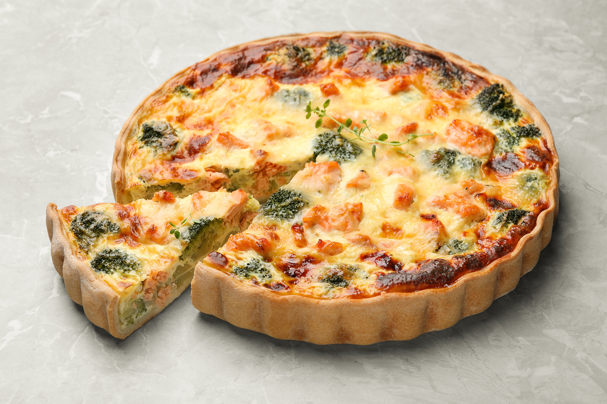

Broccoli Tart: Easy, healthy, tasty

Ingredients
- Pie dough/shortcrust pastry, already rolled out. You can make/roll it by yourself, even though we recommend
store bought.
- Broccoli. You can complement it with other greens if you don't have a lot of it.
- Leeks and/or green onion.
- Any cheese that melts in the oven.
- Eggs.
- Garlic.
- A pan or wok.
- A baking dish.
- Oil (any kind is fine).
- Your preferred assortment of spices.
Steps
- Pour a little bit of oil in the baking dish. Then spread the poured oil all over the insides of the baking
dish.
- Sauté the broccoli, leeks and garlic on the pan/wok. After they are done, turn off the fire and throw the
eggs and the spices in. Mix thoroughly until the eggs are totally incorporated, even partially cooked on the
edges of the pan.
- Put the mixture over the dough inside of the baking dish. Add the cheese on top of the mixture, then send
into the oven on high heat for 20 minutes or until the dough is golden brown and the cheese is melted to
your liking.
- Serve while hot!